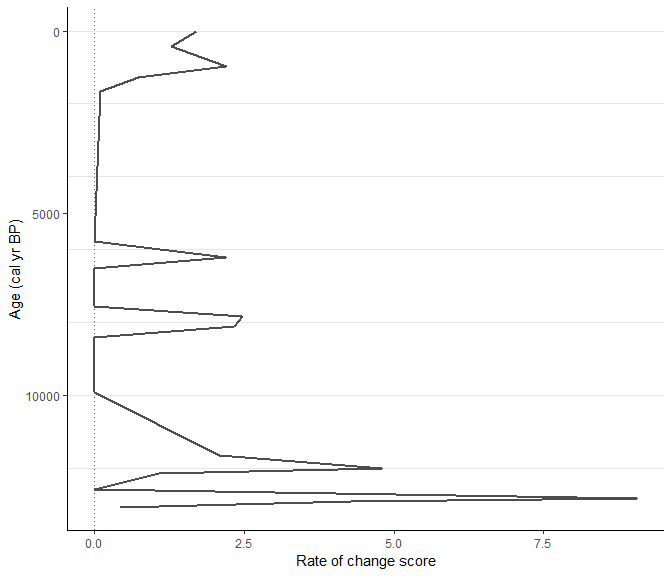
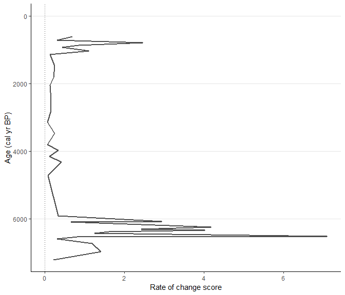
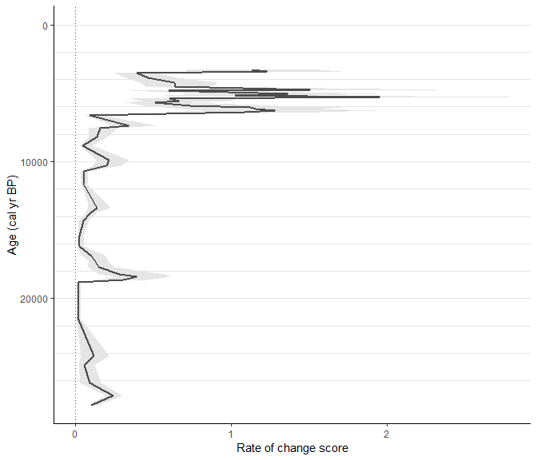
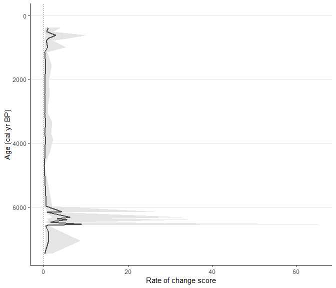
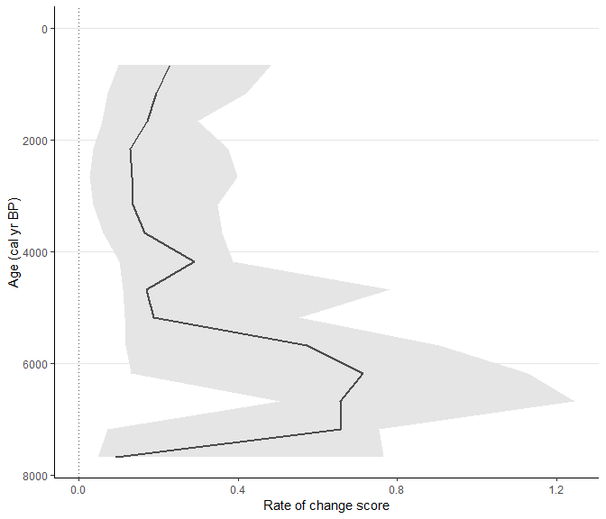
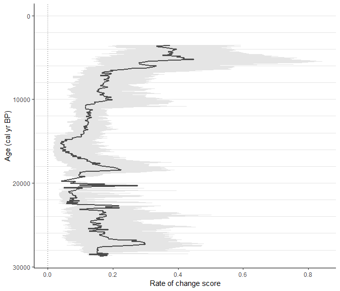
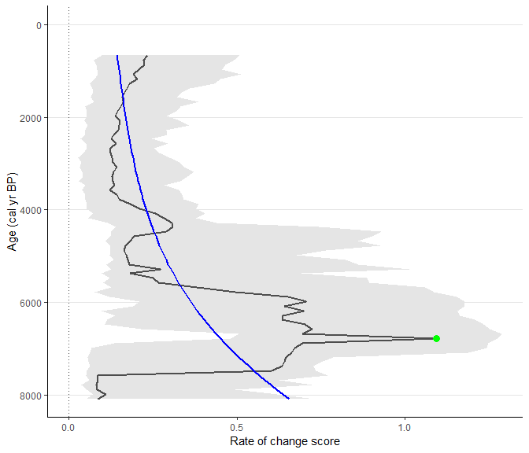

Step-by-step guide
This workflow should show the full strength of the RRatepol package and serve as step-by-step guidance starting from downloading dataset from Neotoma, building age-depth models, to estimating rate-of-change using age uncertainty.
:warning: This workflow is only meant as an example: There are several additional steps for data reparation which should be done to really use the data from Neotoma!
Install packages
Make a list of packages needed from CRAN
package_list <-
c(
"tidyverse", # general data wrangling and visualisation
"pander", # nice tables
"Bchron", # age-depth modelling
"janitor", # string cleaning
"remotes" # installing packages from GitHub
)Install all packages from CRAN
lapply(
package_list, utils::install.packages
)Install packages from GitHub
# Install R-Ratepol
remotes::install_github("HOPE-UIB-BIO/R-Ratepol-package")
# Install neotoma2
remotes::install_github("NeotomaDB/neotoma2")Attach packages
library(tidyverse) # general data wrangling and visualisation
library(pander) # nice tables
library(RRatepol) # rate-of-vegetation change
library(neotoma2) # obtain data from the Neotoma database
library(Bchron) # age-depth modeling
library(janitor) # string cleaningDownload a dataset from Neotoma
Here we have selected the Ahakagyezi Swamp record.
sel_dataset_download <-
neotoma2::get_downloads(50216)Prepare the pollen counts
# get samples
sel_counts <-
neotoma2::samples(sel_dataset_download)
# select only "pollen" taxa
sel_taxon_list_selected <-
neotoma2::taxa(sel_dataset_download) %>%
dplyr::filter(element == "pollen") %>%
purrr::pluck("variablename")
# prepare taxa table
sel_counts_selected <-
sel_counts %>%
as.data.frame() %>%
dplyr::mutate(sample_id = as.character(sampleid)) %>%
tibble::as_tibble() %>%
dplyr::select("sample_id", "value", "variablename") %>%
# only include selected taxons
dplyr::filter(
variablename %in% sel_taxon_list_selected
) %>%
# tunr into the wider format
tidyr::pivot_wider(
names_from = "variablename",
values_from = "value",
values_fill = 0
) %>%
# clean names
janitor::clean_names()
head(sel_counts_selected)[, 1:5]| sample_id | rhamnaceae | combretaceae_melastomataceae | ranunculaceae | prunus |
|---|---|---|---|---|
| 500543 | 1 | 1 | 1 | 1 |
| 500544 | 4 | 0 | 0 | 2 |
| 500545 | 6 | 1 | 0 | 0 |
| 500547 | 4 | 0 | 0 | 0 |
| 500548 | 7 | 0 | 0 | 0 |
| 500549 | 3 | 1 | 0 | 1 |
Here, we strongly advocate that attention should be paid to the section of the ecological group, as well, as the harmonisation of the pollen taxa. However, that is not the subject of this workflow.
We can now try to visualise the taxa per sample_id
sel_counts_selected %>%
tibble::rowid_to_column("ID") %>%
tidyr::pivot_longer(
cols = -c(sample_id, ID),
names_to = "taxa",
values_to = "n_grains"
) %>%
ggplot2::ggplot(
mapping = ggplot2::aes(
x = ID,
y = n_grains,
fill = taxa
),
) +
ggplot2::geom_bar(
stat = "identity",
position = "fill"
) +
ggplot2::labs(
x = "sample_id",
y = "proportion of pollen grains"
) +
ggplot2::theme(
axis.text.x = ggplot2::element_blank(),
legend.position = "none"
)
Preparation of the levels
Sample depth
Extract depth for each level
sel_level <-
neotoma2::samples(sel_dataset_download) %>%
tibble::as_tibble() %>%
dplyr::mutate(sample_id = as.character(sampleid)) %>%
dplyr::distinct(sample_id, depth) %>%
dplyr::relocate(sample_id)
head(sel_level)| sample_id | depth |
|---|---|
| 500543 | 703 |
| 500544 | 753 |
| 500545 | 803 |
| 500547 | 853 |
| 500548 | 908 |
| 500549 | 953 |
Age-depth modelling
We will recalculate the age-depth model ‘de novo’ using the Bchron package.
Prepare chron.control table and run Bchron
The chronology control table contains all the dates (mostly radiocarbon) to create the age-depth model.
Here we only present a few of the important steps of preparation of the chronology control table. There are many more potential issues, but solving those is not the focus of this workflow.
# First, get the chronologies and check which we want to use used
sel_chron_control_table_download <-
neotoma2::chroncontrols(sel_dataset_download)
print(sel_chron_control_table_download)| siteid | chronologyid | depth | thickness | agelimitolder | chroncontrolid |
|---|---|---|---|---|---|
| 27552 | 35429 | 330 | 20 | 1150 | 110443 |
| 27552 | 35429 | 1892 | 16 | 14860 | 110449 |
| 27552 | 35429 | 1175 | 30 | 5250 | 110446 |
| 27552 | 35429 | 2060 | 14 | 15750 | 110451 |
| 27552 | 35429 | 2235 | 30 | 24200 | 110454 |
| 27552 | 35429 | 2087 | 27 | 18890 | 110453 |
| agelimityounger | chroncontrolage | chroncontroltype |
|---|---|---|
| 1010 | 1080 | Radiocarbon |
| 14660 | 14760 | Radiocarbon |
| 5110 | 5180 | Radiocarbon |
| 15530 | 15640 | Radiocarbon |
| 23680 | 23940 | Radiocarbon |
| 18650 | 18770 | Radiocarbon |
# prepare the table
sel_chron_control_table <-
sel_chron_control_table_download %>%
# Here select the ID of one of the chronology
dplyr::filter(chronologyid == 35430) %>%
tibble::as_tibble() %>%
# Here we calculate the error as the average of the age `limitolder` and
# `agelimityounger`
dplyr::mutate(
error = round((agelimitolder - agelimityounger) / 2)
) %>%
# As Bchron cannot accept a error of 0, we need to replace the value with 1
dplyr::mutate(
error = replace(error, error == 0, 1),
error = ifelse(is.na(error), 1, error)
) %>%
# We need to specify which calibration curve should be used for what point
dplyr::mutate(
curve = ifelse(as.data.frame(sel_dataset_download)["lat"] > 0, "intcal20", "shcal20"),
curve = ifelse(chroncontroltype != "Radiocarbon", "normal", curve)
) %>%
tibble::column_to_rownames("chroncontrolid") %>%
dplyr::arrange(depth) %>%
dplyr::select(
chroncontrolage, error, depth, thickness, chroncontroltype, curve
)
head(sel_chron_control_table)| chroncontrolage | error | depth | thickness | chroncontroltype | curve |
|---|---|---|---|---|---|
| 1080 | 70 | 330 | 20 | Radiocarbon | shcal20 |
| 3070 | 70 | 675 | 30 | Radiocarbon | shcal20 |
| 3360 | 70 | 820 | 20 | Radiocarbon | shcal20 |
| 5180 | 70 | 1175 | 30 | Radiocarbon | shcal20 |
| 5870 | 90 | 1335 | 20 | Radiocarbon | shcal20 |
| 9580 | 60 | 1535 | 30 | Radiocarbon | shcal20 |
In this just a toy example we will use only the iteration multiplier
(i_multiplier) of 0.1 to reduce the
computation time. However, we strongly recommend increasing it to 5 for
any normal age-depth model construction.
i_multiplier <- 0.1 # increase to 5
# Those are default values suggested by the Bchron package
n_iteration_default <- 10e3
n_burn_default <- 2e3
n_thin_default <- 8
# Let's multiply them by our i_multiplier
n_iteration <- n_iteration_default * i_multiplier
n_burn <- n_burn_default * i_multiplier
n_thin <- max(c(1, n_thin_default * i_multiplier))
# run Bchron
sel_bchron <-
Bchron::Bchronology(
ages = sel_chron_control_table$chroncontrolage,
ageSds = sel_chron_control_table$error,
positions = sel_chron_control_table$depth,
calCurves = sel_chron_control_table$curve,
positionThicknesses = sel_chron_control_table$thickness,
iterations = n_iteration,
burn = n_burn,
thin = n_thin
)Visually check the age-depth models
plot(sel_bchron)
Predict ages
Let’s first extract posterior ages from the age-depth model (i.e. possible ages)
age_position <-
Bchron:::predict.BchronologyRun(object = sel_bchron, newPositions = sel_level$depth)
age_uncertainties <-
age_position %>%
as.data.frame() %>%
dplyr::mutate_all(., as.integer) %>%
as.matrix()
colnames(age_uncertainties) <- sel_level$sample_id
head(age_uncertainties, n = 8)[, 1:8]| 500543 | 500544 | 500545 | 500547 | 500548 | 500549 | 500550 | 500546 |
|---|---|---|---|---|---|---|---|
| 3172 | 3358 | 3544 | 3864 | 4292 | 4643 | 4908 | 4990 |
| 3353 | 3463 | 3495 | 3818 | 4171 | 4459 | 4748 | 4844 |
| 3393 | 3532 | 3588 | 4801 | 4958 | 5046 | 5134 | 5163 |
| 3236 | 3430 | 3562 | 3826 | 4192 | 4491 | 4790 | 4890 |
| 3003 | 3167 | 3473 | 3758 | 4009 | 4219 | 4441 | 4515 |
| 3211 | 3278 | 3344 | 3725 | 3922 | 4083 | 4245 | 4298 |
| 3368 | 3436 | 3561 | 3629 | 3665 | 3695 | 3724 | 3734 |
| 3410 | 3448 | 3560 | 4121 | 4427 | 4646 | 4819 | 4877 |
We can visualise those “possible ages”
data_age_uncertainties <-
age_uncertainties %>%
as.data.frame() %>%
tibble::rowid_to_column("ID") %>%
tidyr::pivot_longer(
cols = -ID,
names_to = "sample_id",
values_to = "age"
) %>%
dplyr::left_join(
sel_level,
by = dplyr::join_by(sample_id)
)Each line is a single potential age-depth result. Green points represent the radiocarbon dates.
(
fig_age_uncertainties <-
data_age_uncertainties %>%
ggplot2::ggplot(
mapping = ggplot2::aes(
x = age,
y = depth
)
) +
ggplot2::geom_line(
mapping = ggplot2::aes(
group = ID
),
alpha = 0.05,
linewidth = 0.1
) +
ggplot2::geom_hline(
yintercept = sel_level$depth,
lty = 2,
color = "gray50",
alpha = 0.5,
linewidth = 0.1
) +
ggplot2::geom_point(
data = sel_chron_control_table,
mapping = ggplot2::aes(
x = chroncontrolage
),
color = "green",
shape = 15,
size = 3
) +
ggplot2::scale_y_continuous(trans = "reverse") +
ggplot2::scale_x_continuous(trans = "reverse")
)
We can visualise the result as the range of values, each line representing one depth in our data
data_age_uncertainties %>%
ggplot2::ggplot(
mapping = ggplot2::aes(
x = age,
y = depth,
group = depth
)
) +
ggplot2::geom_hline(
yintercept = sel_level$depth,
lty = 2,
color = "gray50",
alpha = 0.5,
linewidth = 0.1
) +
ggplot2::geom_boxplot(
outlier.shape = NA
)
Let’s take the median age of all possibilities as our default
sel_level_predicted <-
sel_level %>%
dplyr::mutate(
age = apply(
age_uncertainties, 2,
stats::quantile,
probs = 0.5
)
)
head(sel_level_predicted)| sample_id | depth | age |
|---|---|---|
| 500543 | 703 | 3276 |
| 500544 | 753 | 3406 |
| 500545 | 803 | 3542 |
| 500547 | 853 | 3872 |
| 500548 | 908 | 4206 |
| 500549 | 953 | 4488 |
We can visualise that by drawing a red line
fig_age_uncertainties +
ggplot2::geom_point(
data = sel_level_predicted,
color = "red",
size = 3
) +
ggplot2::geom_line(
data = sel_level_predicted,
color = "red",
linewidth = 1
)
Visualisation of our data
Let’s make a simple pollen diagram with proportions of pollen taxa
sel_counts_selected %>%
tibble::column_to_rownames("sample_id") %>%
RRatepol:::fc_transfer_into_proportions() %>%
tibble::rownames_to_column("sample_id") %>%
dplyr::inner_join(
sel_level_predicted,
by = dplyr::join_by(sample_id)
) %>%
tidyr::pivot_longer(
cols = -c(sample_id, depth, age),
names_to = "taxa",
values_to = "proportion_of_grains"
) %>%
dplyr::group_by(taxa) %>%
# Calculate the average proportion of grains
dplyr::mutate(
avg_prop = mean(proportion_of_grains)
) %>%
# only keep te main taxa
dplyr::filter(avg_prop > 0.01) %>%
dplyr::ungroup() %>%
ggplot2::ggplot(
mapping = ggplot2::aes(
y = age,
x = proportion_of_grains,
xmax = proportion_of_grains,
xmin = 0,
fill = taxa,
col = taxa
),
) +
ggplot2::geom_ribbon() +
ggplot2::scale_y_continuous(trans = "reverse") +
ggplot2::scale_x_continuous(breaks = c(0, 1)) +
ggplot2::facet_wrap(~taxa, nrow = 1) +
ggplot2::theme(
legend.position = "none"
)
Estimation Rate-of-Change
Here we use the prepared data to estimate the rate of vegetation
change. We will present several scenarios based on the available data.
For all scenarios, we will be using the chisq dissimilarity
coefficient (works best for pollen data), and
time_standardisation == 500 (this means that all ROC values
are ‘change per 500 yr’).
Scenario - levels
“Classic” approach with individual levels.
scenario_1 <-
RRatepol::fc_estimate_RoC(
data_source_community = sel_counts_selected,
data_source_age = sel_level_predicted,
DC = "chisq",
time_standardisation = 500,
Working_Units = "levels" # here is set to use individual levels
)RRatepol::fc_plot_RoC_sequence(data_source = scenario_1)
Scenario - levels - smoothing
We will use the same setting as before but now add smoothing of the
pollen data before analyses. Specifically, we will add
smooth_method = “shep” (i.e. Shepard’s 5-term filter).
scenario_2 <-
RRatepol::fc_estimate_RoC(
data_source_community = sel_counts_selected,
data_source_age = sel_level_predicted,
DC = "chisq",
time_standardisation = 500,
Working_Units = "levels",
smooth_method = "shep" # Shepard's 5-term filter
)RRatepol::fc_plot_RoC_sequence(data_source = scenario_2)
We see that the pattern changed only slightly but the absolute values changed.
Scenario - levels - subsampling
We will now add taxa- standardization by random sub-sampling to 150
pollen grains in each level. In order to do that we need to increase the
number of randomisations. This is again a toy example for a quick
computation and we would recommend increasing the
set_randomisations to 10.000 for any real estimation. To speed
the procces up, we can also set use_parallel ==
TRUE, which will use all cores of a computer.
set_randomisations <- 100scenario_3 <-
RRatepol::fc_estimate_RoC(
data_source_community = sel_counts_selected,
data_source_age = sel_level_predicted,
DC = "chisq",
Working_Units = "levels",
time_standardisation = 500,
smooth_method = "shep",
standardise = TRUE, # set the taxa standardisation
N_individuals = 150, # set the number of pollen grains
rand = set_randomisations, # set number of randomisations
use_parallel = TRUE # do use parallel computing
)We will now also obtain a grey shadow, which is indicating uncertainty
RRatepol::fc_plot_RoC_sequence(data_source = scenario_3)
Scenario - levels - age uncertainty
Now we will add the age uncertainty. For each iteration, the package will randomly select one age sequence from the uncertainty matrix.
scenario_4 <-
RRatepol::fc_estimate_RoC(
data_source_community = sel_counts_selected,
data_source_age = sel_level_predicted,
DC = "chisq",
Working_Units = "levels",
time_standardisation = 500,
smooth_method = "shep",
standardise = TRUE,
N_individuals = 150,
rand = set_randomisations,
use_parallel = TRUE,
age_uncertainty = age_uncertainties # Add the uncertainty matrix
)RRatepol::fc_plot_RoC_sequence(data_source = scenario_4)
The uncertainty around values increased drastically, this is because we are randomly sampling age and taxa with a small number of randomisations.
Scenario - bins
In order to get rid of the effect of uneven distribution of levels,
we can bin the data. Specifically, we will change the
Working_Units to "bins" to select 500 years
bins instead of the individual levels. Note that one level is randomly
selected as a representation of that time bin.
scenario_5 <-
RRatepol::fc_estimate_RoC(
data_source_community = sel_counts_selected,
data_source_age = sel_level_predicted,
DC = "chisq",
Working_Units = "bins", # change the "bins"
bin_size = 500, # sie of a time bin
time_standardisation = 500,
smooth_method = "shep",
standardise = TRUE,
N_individuals = 150,
rand = set_randomisations,
use_parallel = TRUE,
age_uncertainty = age_uncertainties
)RRatepol::fc_plot_RoC_sequence(data_source = scenario_5)
We see that we lost a lot of temporal precision and the uncertainty around each point is high.
Scenario - Mowing window
In order to gain back the temporal resolution, we can apply our novel approach of “moving window”.
scenario_6 <-
RRatepol::fc_estimate_RoC(
data_source_community = sel_counts_selected,
data_source_age = sel_level_predicted,
DC = "chisq",
Working_Units = "MW", # change the "MW" to apply the "moving window"
bin_size = 500,
Number_of_shifts = 5, # number of shifts
time_standardisation = 500,
smooth_method = "shep",
standardise = TRUE,
N_individuals = 150,
rand = set_randomisations,
use_parallel = TRUE,
age_uncertainty = age_uncertainties
)RRatepol::fc_plot_RoC_sequence(data_source = scenario_6)
Detect peak-points
We will detect significant increase of RoC values (i.e. peak-points). Specifically, we will use “Non-linear” method, which will detect significant change from a non-linear trend of RoC
scenario_6_peak <-
RRatepol::fc_detect_peak_points(
data_source = scenario_6,
sel_method = "trend_non_linear"
)Plot the estimates with showing both the peak-points.
RRatepol::fc_plot_RoC_sequence(
data_source = scenario_6_peak,
Peaks = TRUE
)